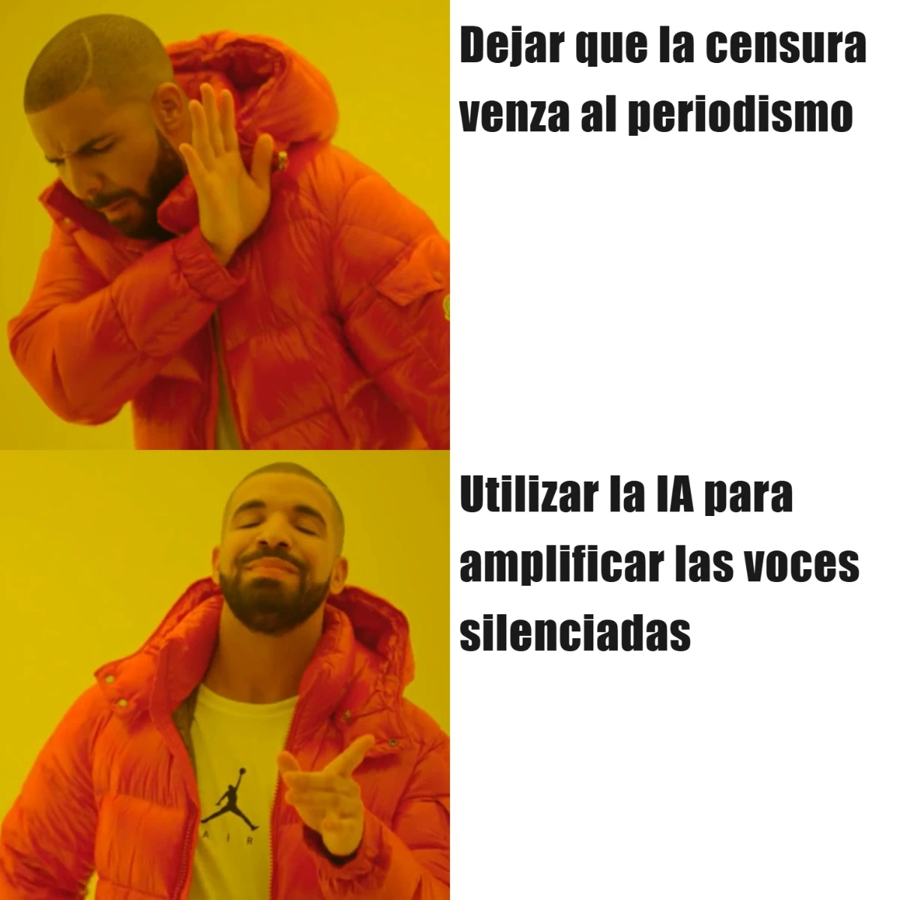

estrategIA #62 ·
Una voz frente a la censura
El contexto
El número presentaba Operación Retuit, una iniciativa periodística en Venezuela que utiliza presentadores virtuales para difundir noticias y proteger a los reporteros. El meme contrapone aceptar el silencio impuesto por la censura con recurrir a la IA para seguir haciendo llegar ese trabajo al público.
Publicado en: estrategIA #62 - Narrativas de resistencia: cómo la IA transforma el periodismo político frente a la censura
Leer el texto de la imagen
Dejar que la censura venza al periodismo Utilizar la IA para amplificar las voces silenciadas
Marca de la herramienta visible en el original: imgflip.com.